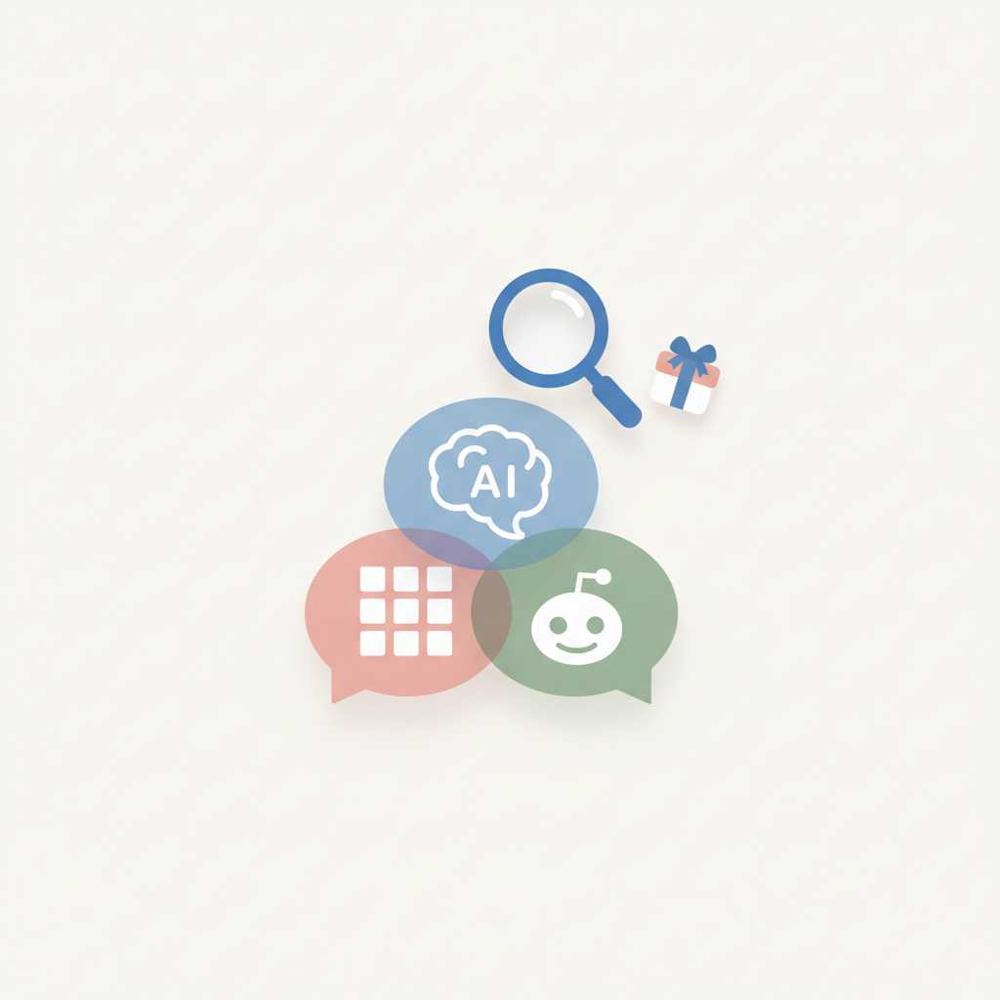
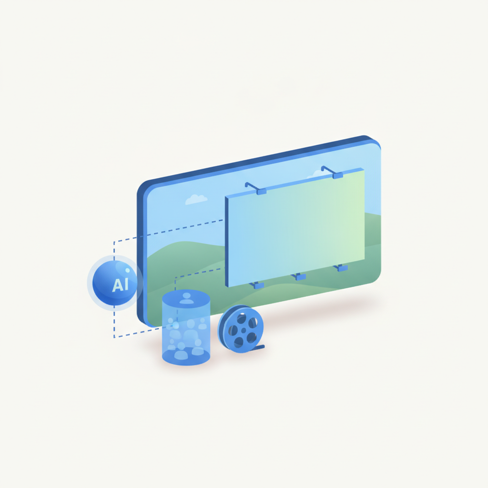
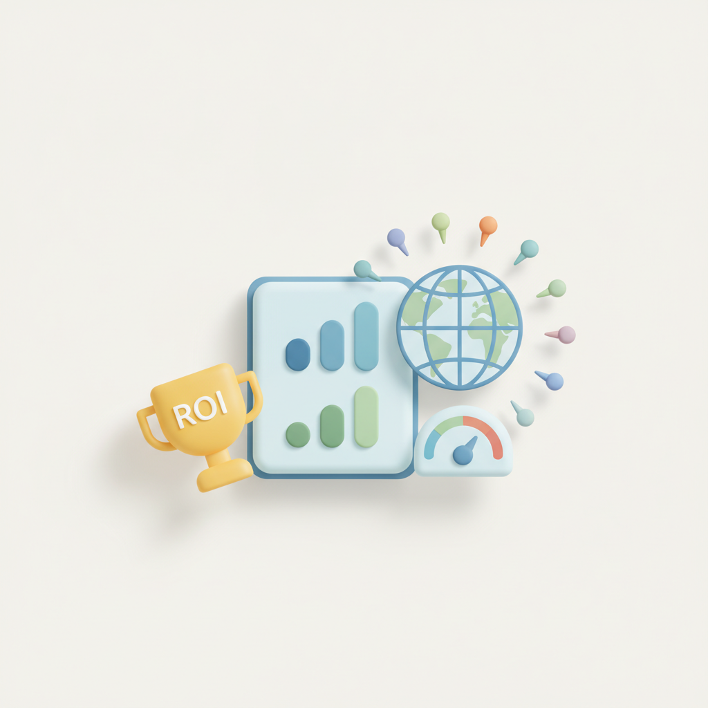
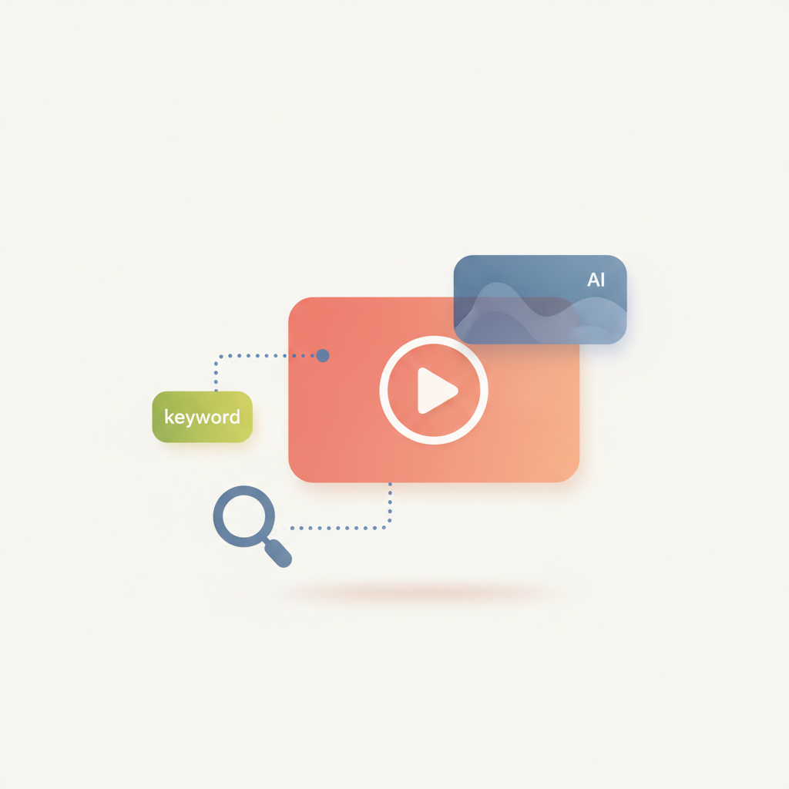
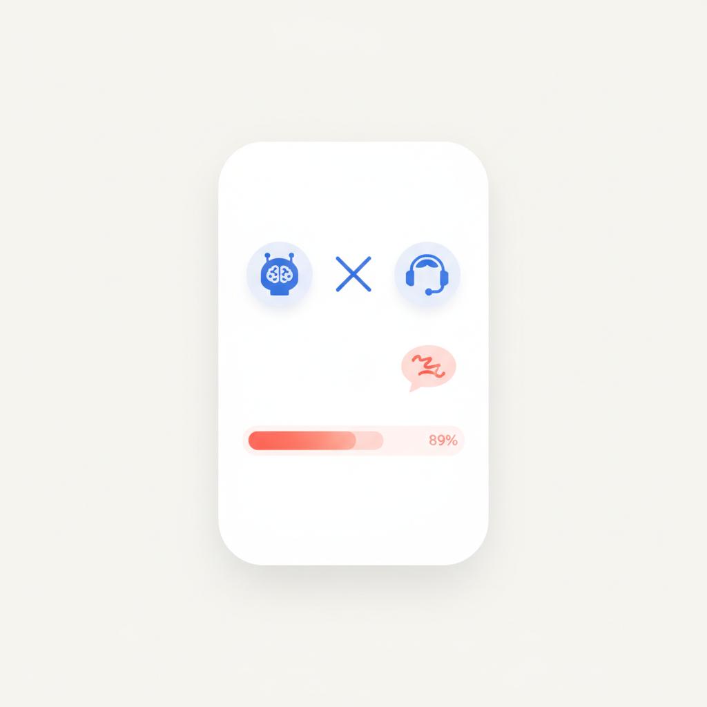

안녕하세요! 월요일 마케팅 소식 전해드립니다 😊 오늘은 AI가 광고·검색·쇼핑 전반을 어떻게 다시 짜고 있는지를 보여주는 소식들이 한꺼번에 쏟아졌습니다. OpenAI가 챗GPT에 이미지 광고를 도입하는 것이 가장 관심을 모으는데, 단순히 새로운 광고 지면이 생긴 것을 넘어 AI 대화 흐름 안에서 브랜드가 어떤 방식으로 존재해야 하는지를 처음으로 본격 시험하는 장이 열리는 셈입니다. 여기에 봇 클릭 문제까지 부상하면서, AI 광고의 성과를 어떻게 측정하고 신뢰할 수 있을지가 업계의 다음 숙제로 떠올랐습니다.
검색 쪽에서도 구조가 빠르게 이동하고 있습니다. 900만 건 분석 결과, AI 검색은 브랜드 공식 홈페이지보다 유튜브·링크드인·레딧 같은 제3자 출처를 훨씬 더 자주 인용하는 것으로 드러났습니다. 소비자 3명 중 2명이 제품 탐색에 AI를 쓴다는 보고서와 겹쳐 읽으면, 브랜드가 자사 채널만 다듬어서는 AI 답변에 포착되기 어렵다는 결론이 나옵니다. 덴츠 CMO 보고서가 'AI 도입 속도보다 성과 입증이 핵심'이라고 짚은 것도 같은 맥락입니다. 어디에서, 어떤 언어로 브랜드 신호를 쌓느냐가 이제 SEO와 AEO를 동시에 결정하는 변수가 됐습니다.
이번 주 첫날, 빠르게 바뀌는 AI 마케팅 지형을 발판 삼아 좋은 인사이트 챙겨가시길 바랍니다! 🚀
오픈AI가 챗GPT에 이미지 광고를 도입하고 광고 성과 측정 기능을 강화한다. 이달 말 미국에서 일부 광고주를 대상으로 새로운 이미지 광고를 시험할 예정이다. 다만 챗GPT 광고 클릭 중 일부가 봇에서 발생했다는 조사 결과가 나오면서 광고 효과 신뢰성 문제도 함께 부각됐다. AI 플랫폼 광고 집행을 검토 중인 마케터라면 초기 성과 데이터의 품질 검증이 필요하다.
›
2엠플리파이와 셈러시 공동 보고서에 따르면 소비자 3명 중 2명이 제품 조사나 선물 아이디어 탐색 시 AI를 활용한 경험이 있다. 소셜미디어에서 제품을 발견하고 레딧에서 다른 이용자의 평가를 확인하는 소비자도 늘고 있다. 브랜드 검색 채널이 검색엔진 중심에서 AI·소셜·커뮤니티로 다변화되고 있어, 마케터는 다채널 콘텐츠 전략을 재점검할 필요가 있다.
› 3400개 이상 엔터프라이즈 브랜드의 AI 검색 노출을 추적한 900만 건 분석 결과, AI 답변은 브랜드 공식 홈페이지보다 유튜브·링크드인·레딧 등 외부 출처를 더 많이 인용하는 것으로 나타났다. 구매 관련 질문일수록 이런 경향이 더욱 뚜렷했다. 마케터는 자사 홈페이지 최적화에만 집중하기보다 외부 플랫폼과 커뮤니티에서의 브랜드 언급 관리를 강화해야 한다.
›
4옴니콤 미디어가 인콘텐츠 광고 애드테크 기업 렘브란드와 협력해 프리미엄 스트리밍 콘텐츠 내 광고 삽입 서비스를 본격화한다. AI가 영상 속 광고 삽입 가능한 장면을 찾고, 액시옴의 소비자 데이터를 활용해 브랜드에 적합한 프로그램을 선정하는 방식이다. 스트리밍 광고 시장이 확대되는 가운데, 기존 프리롤·미드롤 광고를 넘어 콘텐츠 맥락에 자연스럽게 녹아드는 광고 형식이 주목받고 있다.
›
5덴츠 크리에이티브가 14개 시장 1,950명 고위 마케팅 의사결정자를 조사한 '2026 글로벌 CMO 보고서'를 발표했다. AI 도입 속도보다 실제 마케팅·사업 성과 창출이 중요해지고 있으며, 자동화 확대에도 불구하고 브랜드 차별성과 크리에이터·오프라인 경험의 가치는 오히려 커지는 것으로 나타났다. CMO들이 AI 투자 대비 성과를 더 엄격하게 따지기 시작한 만큼, 마케터는 AI 활용의 효율 근거를 구체적으로 제시할 수 있어야 한다.
›
6유튜브 마케팅에서 키워드·썸네일 최적화만으로는 부족하다는 지적이 나왔다. 유튜브가 검색엔진과 추천엔진으로 동시에 작동하는 데다, 구글의 AI 오버뷰와 추천 스니펫에도 유튜브 콘텐츠가 등장하면서 고려해야 할 SEO 요소가 늘고 있다. 영상 기획 단계부터 검색 의도와 AI 검색 노출, 시청자 반응을 함께 고려하는 전략으로 전환이 필요하다.
›
7고객경험 플랫폼 알케머가 미국 소비자 2,009명을 조사한 결과, 89%가 기업의 AI 서비스를 이용하면서 한 가지 이상의 불편을 경험한 것으로 나타났다. 가장 많은 불만은 필요할 때 상담원과 연결하기 어렵다는 점이었다. AI 고객서비스 도입 시 자동화 효율만을 앞세우기보다 사람과의 연결 접점을 함께 설계하는 것이 고객 이탈 방지에 중요하다.
›브랜드 진단부터 지금 당장 해야 할 우선순위까지,
30분 무료 상담에서 함께 정리해드려요.
이미 수십 개 브랜드가 상담받았습니다.
내 브랜드처럼, 함께 고민하는 팀원의 마음으로 봅니다.
스타트업 대표·마케팅 담당자를 위한 30분